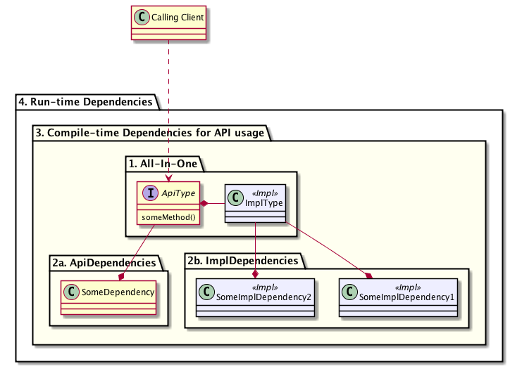
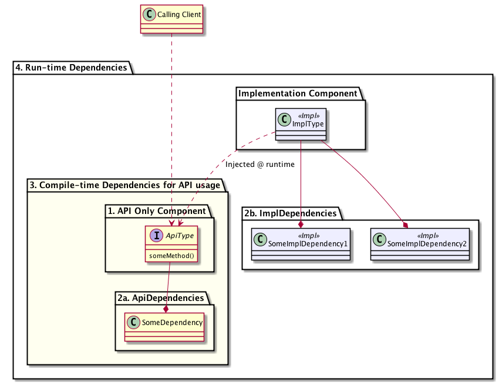
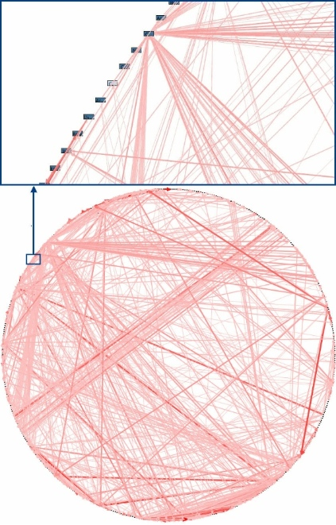

Reducing software complexity
Assuming that the complexity of a codebase is proportional to its size, large-scale development requires some means to reduce the mass of imported dependencies in order to reduce its complexity. Reducing complexity - particularly in large corporate development projects - is necessary to preserve a quicker development/release pace.
A simple yet successful way of achieving dependency reduction is to divide development into Nazgul Software Component (“NSC”) projects - i.e. separate APIs from implementations.
Separating the API and Implementation types into different projects reduces coupling for the client, since none of the implementation types or their transitive dependencies will be seen from the client. This is important, since implementations frequently depend on a larger number of transitive dependencies than APIs (which are typically slimmer in nature than implementations).
An illustrated dependency example
The image below illustrates the dependency tanglement forced onto a client which needs to invoke the someMethod() in an interface defined within the “All-In-One” project. The client project will need to include a maven dependency in its pom to the “All-In-One” project containing the ApiType:
<dependency>
<groupId>the.groupid</groupId>
<artifactId>All-In-One</artifactId>
<version>1.0.0</version>
</dependency>
Given that the All-In-One project contains both the interface specification and an implementation, the transitive dependencies from the All-In-One project must also be included in the build. As illustrated in the image below, we assume that the ApiType uses a dependency “2a. Api Dependencies”, and that the implementation also contained within the All-In-One project uses dependencies from the “2b. Impl Dependencies” projects.
As always, all dependencies of a project must be available on the classpath for the build to succeed. This implies that the compile-time dependencies required to build the project of the “Calling client” includes all the types included within the yellow-ish rectangle “3. Compile-time Dependencies for API usage”. In this case, the scope is identical to the scope at runtime, which means that the full implementation must be present just to compile the project containing “Calling client”. Also, the runtime scope (indicated by “4. Run-time Dependencies”) contains all projects in the implementation, even if the implementation is not used (say, by injecting another implementation of the ApiType at runtime).
This scenario increases the risk of “jar-hell”-like problems unless the runtime loads dependencies with separate classloaders, such as an OSGi solution. And even worse - this is simply bad development practise.

Instead, we could decouple the implementation from the API by placing it in a separate maven project. This implies that unwanted dependency bloat is reduced considerably, as illustrated in the image below. Note now, that the “3. Compile-time Dependencies for API usage” set differs from the “4. Run-time Dependencies”. This is a Good Thing, since it reduces dependency tanglement. Nazgul Software Component (“NSC”) projects adhere to this principle of separating API projects from implementation projects.

Definitions: Coupling and Cohesion
Parts of software complexity are defined by the coupling and cohesion of the codebase.
-
Cohesion: the degree to which the elements of a module belong together.
-
Coupling: the degree to which each program module relies on each one of the other modules.
Some researchers consider coupling and cohesion to be difficult or impossible to separate. One example of this view is hinted at by the article, whose abstract is shown below:
The Structural Complexity of Software: An Experimental Test
Article published in IEEE Transactions on Software Engineering (Nov. 2005) by authors David P. Darcy, Chris F. Kemerer, Sandra A. Slaughter and James E. Tomayko.
This research examines the structural complexity of software and, specifically, the potential interaction of the two dominant dimensions of structural complexity, coupling and cohesion. Analysis based on an information processing view of developer cognition results in a theoretically driven model with cohesion as a moderator for a main effect of coupling on effort. An empirical test of the model was devised in a software maintenance context utilizing both procedural and object-oriented tasks, with professional software engineers as participants. The results support the model in that there was a significant interaction effect between coupling and cohesion on effort, even though there was no main effect for either coupling or cohesion. The implication of this result is that, when designing, implementing, and maintaining software to control complexity, both coupling and cohesion should be considered jointly, instead of independently. By providing guidance on structuring software for software professionals and researchers, these results enable software to continue as the solution of choice for a wider range of richer, more complex problems.
Reducing dependency tanglements
One of the most problematic aspects of legacy code is its tendency to be excessively tangled, meaning that classes or projects within the code have too many dependencies to other classes or projects. This, in turn, makes code difficult and time-consuming to refactor and reuse since classes are tightly connected (“tangled”) to many other classes.
 Tanglement in enterprise projects can even take on artistic aspects, as illustrated in the “Big Ball of Yarn” image to the left (see Big Ball of Yarn for the original article where the image occurred or The Enterprise Dependency for another interesting look at an overly tangled codebase.
While the images may seem somewhat hilarious, the situation is far from unique in regards to enterprise codebases for projects with some size. Refactoring a single class in the illustrated codebase is going to affect a multitude of other classes in a ripple-like effect caused by the excessive tanglement. That - in turn - will cost time and money.
One of the most important aspects of large-scale enterprise development is therefore to reduce tanglement in a structured way - meaning that the same approach can be used in small as well as large projects. It is really a pain to change development patterns as an enterprise codebase grows. Also, from a business owner’s perspective, it would be a fair bet to claim little interest in spending lots of money to refactor codebases with no new features implemented.
Enforcing proper dependencies
 The codestyle project within Nazgul Tools supplies enforcement rules, which - if in operation - prevents developers from importing implementation project dependencies into other implementation projects. It is recommended to import dependencies only on API/SPI or Model projects. Please refer to the Nazgul Tools Codestyle project for further details.
The codestyle project within Nazgul Tools supplies enforcement rules, which - if in operation - prevents developers from importing implementation project dependencies into other implementation projects. It is recommended to import dependencies only on API/SPI or Model projects. Please refer to the Nazgul Tools Codestyle project for further details.
The Anglerfish-lookalike dependency, as shown in the image to the right (see Anglerfish dependency for the image orginial), is another frightful example of legacy tanglements which can be avoided by using the Nazgul Tools Codestyle enforcement rules. They are recommended.
{kind=link}